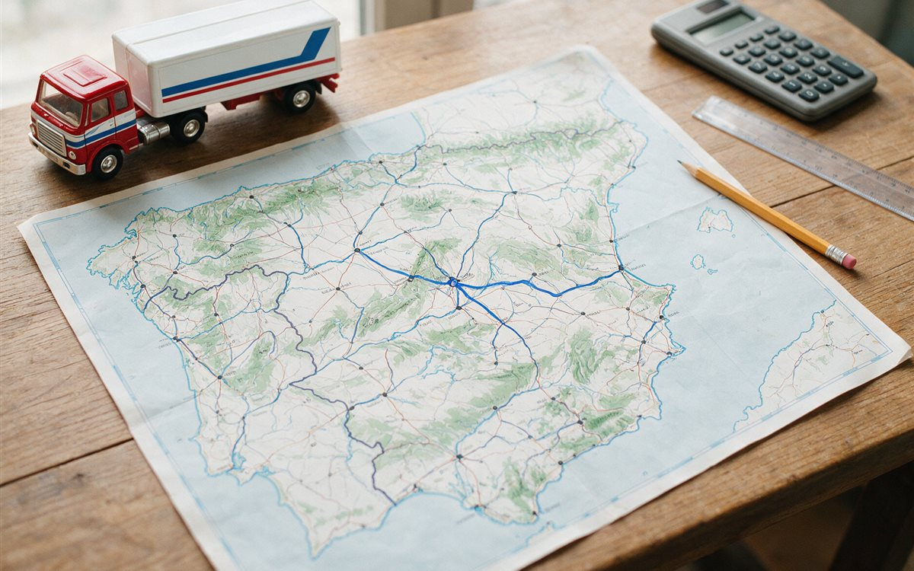

En una mudanza entre provincias el precio no depende solo de los kilómetros: se construye con una tarifa base, un importe por distancia y varios factores que lo modifican. Conocerlos te permite entender un presupuesto y preguntar lo que importa.
La fórmula básica
En nuestro modelo, hasta unos 30 km se aplica una tarifa de mudanza local. A partir de ahí, el precio se calcula así:
Precio ≈ tarifa base + (km − 30) × importe por km, con un rango del −12 % al +18 % para cubrir las variaciones de cada servicio.
El importe por km depende del tamaño de la mudanza: desde unos 0,45 €/km en un estudio hasta unos 1,25 €/km en una casa. Ejemplo: un piso de 1-2 habitaciones de Madrid a Sevilla (≈ 488 km) tiene una tarifa base de 380 €, más (488 − 30) × 0,65 € ≈ 298 €. Resultado: unos 678 €, que con el rango se traduce en 600-800 €. Para un piso de 3 o más habitaciones la misma ruta ronda los 910-1.220 €.

Qué otros factores influyen
- Volumen: más carga exige un vehículo mayor y más operarios.
- Peajes y combustible: en trayectos largos pesan más y varían con la ruta.
- Viaje de vuelta: el camión debe regresar y, si lo hace vacío, ese coste se reparte en el precio.
- Carga exclusiva o compartida: compartir camión con otras mudanzas abarata, pero alarga los plazos de entrega.
- Fecha: la temporada alta (junio a septiembre), los fines de semana y los finales de mes encarecen.
- Islas: el transporte marítimo añade un suplemento por el ferry.
- Accesos: plantas sin ascensor o necesidad de elevador suman horas o servicios.
En la tabla de precios por provincia puedes ver ejemplos desde tu ciudad a los destinos más frecuentes.